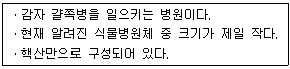
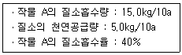

식물보호기사 (2013-03-10 기출문제)
1과목: 식물병리학
1. 대추나무 빗자루병의 병원균은?
- Pseudomonas
- Phytoplasma
- Alternaria
- Fusarium
(정답률: 86%)

2. 식물에 증생병인 혹을 형성하는 병원균은?
- Agrobacterium tumefaciens
- Rhizoctonia solani
- Clavibacter michiganensis
- Xanthomonas campestris
(정답률: 87%)
3. 다음 바이러스 중 길이가 가장 긴 것은?
- Rhabdovirus
- Potyvirus
- Closterovirus
- Carlavirus
(정답률: 66%)
4. 다음에 열거한 대기오염 물질 중에서 식물에 해로운 영향을 주지 않는 것은?
- 이산화탄소(CO2)
- 이산화황(SO2)
- 불화수소(HF)
- 오존(O3)
(정답률: 86%)
5. 목재 썩음병에 관계하는 중요한 효소는?
- Lipase
- Amylase
- Ligninase
- Phoshotase
(정답률: 86%)
6. 병원체의 침입에 대한 식물의 과민성 반응과 관계가 깊은 것은?
- 검(gum)의 축적
- 전충체 형성
- 괴사적 방어
- 세포벽 강화
(정답률: 76%)
7. 병에 걸린 보리를 먹으면 식중독을 일으키는 병은?
- 겉깜부기병
- 붉은곰팡이병
- 줄녹병
- 흰가루병
(정답률: 90%)
8. 방선균 Streptomyces 에 의하여 발생하는 감자의 병해는 어느 것인가?
- 둘레썩음병
- 역병
- 더뎅이병
- 풋마름병
(정답률: 70%)
9. 병원체의 분류에 그람염색(Gram staining)을 이용하는 것은?
- 감자 둘레썩음병
- 감자 잎말림병
- 감자 X 바이러스병
- 감자 역병
(정답률: 76%)
10. 파이토알렉신(Phytoalexin)과 관계가 없는 것은?
- 발병억제물질
- Pisatin
- Ipomeamarone
- 병원균의 분비
(정답률: 59%)
11. 밤나무 줄기마름병의 생물적 방제에 이용되는 저병원성계통 균기생 바이러스에 존재하는 것은?
- ss-DNA
- ds-DNA
- ss-RNA
- ds-RNA
(정답률: 71%)
12. 에르고스테롤(Ergosterol) 생합성 저해제가 진균에 미치는 작용은?
- 균사의 신장저해
- 분생포자의 발아억제
- 핵산의 복제억제
- 단백질의 합성억제
(정답률: 49%)
13. 다음 중 전형적인 벼도열병의 병징은?
- 줄무늬
- 타원형
- 원형
- 방추형
(정답률: 68%)
14. 감자 역병균의 학명은?
- Phytophthora infestans
- P;asmopara viticola
- Peronospora brassicae
- Alternaria solani
(정답률: 82%)
15. 못자리나 기계이앙을 위한 상자 육묘에서 문제가 되는 벼의 주요 병은?
- 이삭누룩병
- 탄저병
- 흰가루병
- 모잘록병
(정답률: 82%)
16. 다음 중 화기전염(花器傳染)되는 병은?
- 보리 겉깜부기병
- 보리 흰가루병
- 보리 오갈병
- 밀 붉은녹병
(정답률: 66%)
17. 바이러스에 감염된 식물에서 봉입체를 확인하기 위하여 일반적으로 사용하는 기구는?
- 이온교환수지칼럼
- 광학현미경
- PCR기
- Shigometer
(정답률: 68%)
18. 다음 설명하는 병원체는?

- Satellite virus
- virus
- viroid
- Spiroplasma
(정답률: 92%)
19. 식물 병의 진단 방법에 대한 설명으로 틀린 것은?
- 지표식물인 야생 담배(Nicotiana glutinosa)에 TMV를 접종하면 전신병징이 나타난다.
- 괴경지표법에 의하여 씨감자의 바이러스병을 진단할 수 있다.
- 벼오갈병은 충체 내 주사법에 의한 진단법으로 감염 여부를 진단할 수 있다.
- 오이 노균병은 즙액접종에 의한 진단법을 사용하여 감염 여부를 진단할 수 있다.
(정답률: 74%)
20. 담배에 모자이크병은 미생물에 의한 것이 아니라 살아있는 감염성 액체에 의한 것이라고 결론짓고 그 원인을 바이러스라고 처음 부른 사람은?
- Mayer
- Ivanowski
- Burrill
- Beijerinck
(정답률: 53%)
2과목: 농림해충학
21. 곤충이 분산과 이동을 할 때 수동적 이동이 일어나는 원인은?
- 운동
- 먹이 찾기
- 물과 바람
- 짝 찾기
(정답률: 71%)
22. 어떤 곤충 유충의 발육율(y)과 온도(x)와의 관계식을 “y = ax + b”와 같이 표현했을 때 이 곤충의 발육영점온도를 추정하는 방법은?
- -b/a
- a-b
- -1/a
- -1/b
(정답률: 82%)
23. 다음 중 외국으로부터 침입한 해충은?
- 벼잎벌레
- 콩잎말이나방
- 온실가루이
- 복숭아혹진딧물
(정답률: 82%)
24. 툴그렌깔때기는 어느 곤충의 조사 연구에 필요한 기구인가?
- 수생곤충
- 토양곤충
- 비래곤충
- 육상곤충
(정답률: 58%)
25. 완전변태류(holometabolous development) 곤충이 아닌 것은?
- 배추흰나비
- 벼룩
- 풀잠자리
- 흰개미
(정답률: 61%)
26. 살충제의 효력을 충분히 발휘시키기 위하여 혹은 약효를 증진시키기 위하여 사용하는 것은?
- 기피제
- 불임제
- 보조제
- 증량제
(정답률: 78%)
27. 밀, 보리 벼과식물 등을 유충이 잎 선단부부터 엽육속을 불규칙하게 식해하여 들어가 피해부위가 갈색으로 변하는 양상을 나타내는 해충은?
- 조명나방
- 보리잎벌
- 혹명나방
- 보리굴파리
(정답률: 61%)
28. 성충은 식물조직에 산란하고 유충은 2령이 경과한 후 땅 속에서 제1, 제2 번데기 기간을 거쳐 성충이 되는 곤충은?
- 알락수염노린재
- 오이총채벌레
- 담배거세미나방
- 온실가루이
(정답률: 46%)
29. 온실에서 주로 많이 발생하며 토마토의 TYLCV를 매개하는 해충은?
- 담배가루이
- 온실가루이
- 목화진딧물
- 복숭아혹진딧물
(정답률: 52%)
30. 다음 중 해충과 해충발생밀도 조사법과의 관계가 잘못된 것은?
- 고자리파리 - 공중포충망 조사법
- 복숭아심식나방 - 페로몬 조사법
- 멸강나방 - 먹이유살 조사법
- 멸구, 매미충류 - 포충망 조사법
(정답률: 57%)
31. 해충의 종합적 방제법에서 유용곤충의 효과를 개선할 수 있는 최선의 방법은?
- 정기적 약제살포
- 비선택성 약제살포
- 경제적 피해수준 도달시 약제살포
- 유용곤충에 유리한 환경의 조성
(정답률: 75%)
32. 곤충의 탈피와 변태를 조절하는 호르몬을 분비하는 내분비기관이 아닌 것은?
- 뇌
- 전흉선
- 알라타체
- 말단신경절
(정답률: 63%)
33. 응애가 곤충과 다른 점으로 옳은 것은?
- 홑눈이 있다.
- 완전변태를 한다.
- 다리가 6마디로 되어 있다.
- 기관이나 숨문으로 호흡한다.
(정답률: 79%)
34. 곤충의 다형현상(Polymorphism)에 관여하는 호르몬은?
- JH(유약호르몬, Juvenile Hormone)
- PTTH(앞가름샘호르몬, Prothoracicotropic Hormone)
- DpH(휴면호르몬, Diapause Hormone)
- NH(신경호르몬, Neuro Hormone)
(정답률: 66%)
35. 조명나방 생태에 대한 설명으로 옳지 않은 것은?
- 옥수수 줄기속에서 유충태로 월동한다.
- 단식성으로 옥수수만 먹는다.
- 2화기에는 옥수수자루를 가해한다.
- 성충의 주광성을 이용하여 등화유살한다.
(정답률: 70%)
36. 조팝나무 진딧물의 기주가 아닌 것은?(오류 신고가 접수된 문제입니다. 반드시 정답과 해설을 확인하시기 바랍니다.)
- 조팝나무
- 사과나무
- 귤나무
- 감나무
(정답률: 57%)
37. 동물분류학상 곤충이 속해있는 문(門)은?
- 환형동물문
- 해면동물문
- 절지동물문
- 선형동물문
(정답률: 86%)
38. 곤충의 입모양에서 코일 모양의 입을 가진 해충은?
- 가시점둥글노린재
- 배추흰나비
- 고자리파리
- 벼멸구
(정답률: 73%)
39. 점박이응애에 대한 설명으로 옳지 않은 것은?
- 암컷의 길이가 수컷에 비해 작다.
- 성충으로 월동한다.
- 숙주식물의 잎에서 즙액을 빨아 먹는다.
- 천적으로는 왕게응애와 신이리응애가 있다.
(정답률: 65%)
40. 다음 중 곤충분류학상 같은 목의 곤충끼리 짝지어지지 않은 것은?
- 복숭아혹진딧물 - 가루깍지벌레
- 배추좀나방 - 배추흰나비
- 혹명나방 - 이화명나방
- 벼물바구미 - 벼멸구
(정답률: 64%)
3과목: 재배학원론
41. 콩 2 이랑에 옥수수 1 이랑씩 서로 건너서 교호로 재배하는 작부방식은?
- 간작
- 교호작
- 혼작
- 주위작
(정답률: 79%)
42. 수해가 유발될 때 작물체 내에 가장 많이 집적되는 물질은?
- 옥살초산
- 피부르산
- 에탄올
- 젖산
(정답률: 68%)
43. 다음의 조건에서 작물 A의 10a당 질소시비량을 계산하면 얼마인가?

- 25.0kg
- 37.5kg
- 40.0kg
- 50.0kg
(정답률: 45%)
44. 다음 중 연작의 피해가 가장 적은 작물로 짝지어진 것은?
- 고추, 강낭콩, 벼, 수박
- 고구마, 콩, 완두, 토마토
- 수수, 감자, 가지, 완두
- 벼, 맥류, 담배, 옥수수
(정답률: 72%)
45. 월동작물인 가을밀이나 가을보리를 봄에 파종하면 일어나는 현상은?
- 출수가 촉진된다.
- 출수가 되지 않고 영양생장만 한다.
- 출수는 지연되나 수량은 많아진다.
- 영양생장은 거의하지 않고, 성숙이 빨라 채종하기가 좋다.
(정답률: 81%)
46. 벼가 장해형 냉해를 입을 때 불임립 발생이 많아지는 주원인은?
- 이삭의 추출불량
- 벼 꽃의 기형화
- 약벽세포의 이상비대
- 동화물질의 전류억제
(정답률: 55%)
47. 작물의 생육단계 중 내건성(耐乾性)이 가장 약한 시기는?
- 유숙기
- 출수기
- 분얼기
- 감수분열기
(정답률: 63%)
48. 벼의 침수피해는 생육단계에 따라 다른데, 그 피해가 비교적 작은 시기는?
- 분얼추기
- 유수형성기
- 수잉기
- 출수개화기
(정답률: 40%)
49. 다음 중 우리나라의 논 면적과 밭 면적으로 가장 적합한 것은?
- 논 - 약 1000만 ha, 밭 - 약 5만 ha
- 논 - 약 100만 ha, 밭 - 약 70만 ha
- 논 - 약 200만 ha, 밭 - 약 50만 ha
- 논 - 약 20만 ha, 밭 - 약 5만 ha
(정답률: 63%)
50. 벼에서 차광(광을 96% 차단, 10일간)에 의한 수량감소가 가장 큰 생육단계는?
- 출수 전 40~50일
- 출수 전 10~20일
- 출수 후 10~20일
- 출수 후 40~50일
(정답률: 45%)
51. 휴한작물(休閑作物)에 속하는 것은?
- 클로버, 콩
- 옥수수, 호밀
- 벼, 보리
- 조, 기장
(정답률: 74%)
52. 벼의 병해 중 곤충의 매개로 발생하는 병은?
- 도열병
- 잎집무늬마름병
- 흰잎마름병
- 줄무늬잎마름병
(정답률: 69%)
53. 벼 품종의 기상생태형과 재배적 특성을 올바르게 설명한 것은?
- 조기재배에는 감온형이 알맞다.
- 조식재배에는 감온형이 알맞다.
- 만식재배에는 기본영양생장형이 알맞다.
- 만식재배에는 묘대일수감응도가 높은 것이 알맞다.
(정답률: 43%)
54. 작물이 건물(乾物) 1g을 생산하는데 소비한 수분량(g)을 요수량(要水量)이라 하는데, 다음 중 요수량이 가장 큰 것은?
- 호박
- 클로버
- 흰명아주
- 오이
(정답률: 58%)
55. 세계의 3대 식량작물(곡류)에 해당되는 것은?
- 밀, 벼, 옥수수
- 밀, 보리, 호밀
- 밀, 옥수수, 고구마
- 벼, 콩, 수수
(정답률: 82%)
56. 논갈이에 대한 설명으로 옳지 않은 것은?
- 유기물이 많은 논은 추경을 한다.
- 겨울에 강수량이 많은 곳은 춘경을 한다.
- 추경이 건토효과가 크게 나타난다.
- 벼의 만식재배시 심경을 하면 등숙이 좋다.
(정답률: 50%)
57. 다음 양분 중 토양 pH 5와 pH 9에서 가급도가 높아지는 것이 옳게 짝지어진 것은?
- pH 5 : 철, 칼슘 pH 9 : 질소, 인
- pH 5 : 붕소, 마그네슘 pH 9 : 질소, 인
- pH 5 : 붕소, 망간 pH 9 : 칼슘, 인
- pH 5 : 붕소, 황 pH 9 : 칼륨, 황
(정답률: 49%)
58. 식용 및 씨감자의 저장 적온으로 가장 적합한 것은?
- -1℃ ~ 1℃
- 3℃ ~ 4℃
- 7℃ ~ 11℃
- 12℃ ~ 15℃
(정답률: 61%)
59. 토양산성화의 원인으로 가장 거리가 먼 것은?
- 빗물에 의한 염기용탈
- 염화가리, 황산암모니아 등의 유입
- 토양유기물의 분해
- 인산, 마그네슘의 보급
(정답률: 73%)
60. 답전윤환의 효과에 대한 설명으로 옳지 않은 것은?
- 기지의 회피
- 잡초의 경감
- 지력증강
- 토양 중의 염류집적
(정답률: 78%)
4과목: 농약학
61. 농도 95%인 타로닐 수화제 원제 20kg을 가지고 증량제를 희석하여 타로닐 수화제 75%를 만들려고 한다. 이 때 소요되는 증량제는 몇 kg인가?
- 5.33
- 10.33
- 15.33
- 20.33
(정답률: 54%)
62. 농약의 분해산물 중의 극성물질을 추출하는데 부적당한 용매는?
- 아세토니트릴(Acetonitrile)
- 벤젠(Benzene)
- 아세톤(Acetone)
- 메탄올(Methanol)
(정답률: 64%)
63. 잡초가 발아하기 전에 지표면에 약제를 살포하여 잡초종자로 발아하지 못하게 하거나 발아 직후의 어린식물의 생육을 멈추게 하는 제초제를 무엇이라 하는가?
- 경엽처리 제초제
- 토양처리 제초제
- 선택성 제초제
- 비선택성 제초제
(정답률: 69%)
64. 다음 중 제초제의 제형으로 가장 부적합한 것은?
- 입제
- 수화제
- 분제
- 액제
(정답률: 57%)
65. 응애류를 방제하는 살비제의 구비요건이라고 볼 수 없는 것은?
- 저항성 응애류에 대하여 효과가 좋을 것
- 성충과 유충뿐만 아니라 알에 대하여 효과가 클 것
- 응애류는 발생기간이 짧으므로 잔효력이 짧을 것
- 응애류에만 선택적 효과가 있을 것
(정답률: 73%)
66. 살균제 농약의 작용기작 중 산화, 환원에 있어서 SH기가 관여하는 탈수소화 효소나 SH기질과 작용하여 황화물을 만들어 기능을 상실시켜 살균작용을 나타내는 농약이 아닌 것은?
- 캡탄(captan) 수화제
- 폴펫(folpet) 수화제
- 디노(dino) 수화제
- 다코닐(daconil) 수화제
(정답률: 36%)
67. 한국잔디의 라이족토니아 마름병에 적용하는 살균제는?
- 트리포린
- 클로로탈로닐ㆍ코퍼설페이트베이식
- 아족시스트로빈ㆍ사이프로코나졸
- 이미녹타딘트리알베실레이트
(정답률: 58%)
68. 다음 약제 중 주성분을 가스제로 작용시키는 약제가 아닌 것은?
- 시안화수소
- 클로로피크린
- 메타알데하이드
- 메틸브로마이드
(정답률: 51%)
69. 유기인제에 중독되었을 때 주로 사용되는 해독제는?
- 치옥탄
- PAM
- 쿠렙톤
- 비타민케이
(정답률: 77%)
70. 유기염소계 살충제에 대한 설명으로 옳은 것은?
- 살충력이 강하고 대량생산이 가능하다.
- 약해가 적고 분해되기 쉽다.
- 적용해충의 범위가 넓어 품목개발이 많이 이루어지고 있다.
- 광선에 의한 분해가 빨라 잔효성이 적은 편이다.
(정답률: 63%)
71. 분제(입제 포함)의 물리적 성질로서 가장 거리가 먼 것은?
- 현수성(suspensibility)
- 비산성(floatability)
- 부착성(deposition)
- 토분성(dustibility)
(정답률: 72%)
72. 독성 표시 기호 중 TLm(48시간) 이란?
- 어종별로 48시간 이후에도 50%가 견뎌내는 약제 농도
- 꿀벌에 대하여 48시간 이후에도 50%가 견뎌내는 약제 농도
- 누에에 대하여 48시간 이후에도 50%가 견뎌내는 약제 농도
- 모든 동물에 대하여 48시간 이후에도 50%가 견뎌내는 약제 농도
(정답률: 74%)
73. 살균제의 병원균체 침투에 대한 설명으로 옳은 것은?
- 수용성이 높아야 잘 침투된다.
- 기름에 대한 용해도가 높아야 잘 침투된다.
- 기름에 대한 용해도와 수용성이 적절한 특성을 나타내어야 잘 침투된다.
- 분자내에 음전하를 가지고 있어야 잘 침투된다.
(정답률: 75%)
74. 농약의 약효보증기간 동안 유효성분의 분해를 방지 또는 억제하기 위하여 첨가되는 물질은?
- Fenclorim
- Oxabentrinil
- Epichlorohydrin
- Metolachlor
(정답률: 47%)
75. 다음 농약 안전성평가 항목 중 일반 독성 분야에 속하지 않는 것은?
- 급성독성
- 아급성독성
- 어독성
- 만성독성
(정답률: 68%)
76. 일반 농가에서 희석살포용 제형을 용수에 희석하여 살포액을 조제할 때 가장 일반적으로 사용하는 방법은?
- 백분율에 따른 퍼센트액 조제법
- 백만분율에 따른 피피엠 조제법
- 용량 배수에 따른 배액 조제법
- 분자량율에 따른 몰용액 조제법
(정답률: 75%)
77. 피레트린(Pyrethrin) 살충제는 충제의 어느 부분에 작용하여 효과를 내는가?
- 원형질독
- 피부독
- 신경독
- 근육독
(정답률: 79%)
78. 다음 살포방법 중 살포액 중의 농약의 농도가 높으나 혼작지대나 작물의 생육이 불균일한 지역에서는 비실용적인 것은?
- 분입제 살포
- 입제 살포
- 공중액제 살포
- 수면 시용
(정답률: 62%)
79. 페노뷰카브 분제(밧사) 살충제의 종류는?
- 카바메이트계
- 유기인계
- 유기염소계
- 트리아진계
(정답률: 66%)
80. 안전농산물 생산을 위한 농약개발 방법으로 옳지 않은 것은?
- 고활성, 저투입 농약의 개발
- Xylene이 주 용제로 사용되는 농약 개발
- 종자분의제의 개발
- 병해충 동시방제용 혼합제 개발
(정답률: 78%)
5과목: 잡초방제학
81. 생물적 방제법 중 흑색달팽이 방류 시 물달개비 및 방동사니의 억제율은? (- 무처리 : 강피 174본/m2, 물달개비 297본/m2, 방동사니 207본/m2 - 흑색달팽이 방류 시 : 물달개비 4본/m2, 방동사니 73본/m2)
- 98.5%, 64.7%
- 1.3%, 35.3%
- 98.7%, 64.7%
- 1.5%, 35.3%
(정답률: 58%)
82. 다년생으로만 이루어진 잡초 군락은?
- 뚝새풀, 명아주, 닭의장풀, 개망초
- 쇠뜨기, 벗풀, 토끼풀, 올미
- 매자기, 물고랭이, 새섬매자기, 강피
- 물피, 알방동사니, 가막사리, 물옥잠
(정답률: 64%)
83. 광요구성 잡초종자의 발아에 가장 중요하게 영향을 미치는 것은?
- 클로로필(chiorophyll)
- 시토크롬(cytochrome)
- 피토크롬(phytochrome)
- 크립토크롬(cryptochrome)
(정답률: 74%)
84. 잡초방제 방법이 잘못 짝지어진 것은?
- 예방적 방제법 - 농기구 등에 붙어있는 잡초 종자 제거
- 재배적 방제법 - 작물의 재식밀도 조절을 통한 잡초 발생 억제
- 생태적 방제법 - 토양 열처리
- 물리적 방제법 - 토양 피복
(정답률: 77%)
85. 토양처리제로 식물체내에서 이행되며 세포분열 및 단백질 합성을 저해하여 고사시키는 계통은?
- 카르바메이트계와 디니트로아닐린계
- 트라이아진계와 설포닐우레아계
- 유기인계와 산아미드계
- 피라졸계와 요소계
(정답률: 41%)
86. 잡초의 전파 방법 중에서 사람이나 동물에 쉽게 부착되어 전파되어 지는 잡초는?
- 냉이
- 도꼬마리
- 물달개비
- 피
(정답률: 82%)
87. 방동사니과 잡초의 행태적 특징으로 옳은 것은?
- 잎이 좁고 능선이 없다.
- 줄기가 삼각형이다.
- 엽이가 있다.
- 잎은 엽신과 엽초로 구분되어 있다.
(정답률: 71%)
88. 다음 중 발아 시 산소 요구도가 가장 큰 잡초는?
- 마디꽃
- 명아주
- 물달개비
- 올챙이고랭이
(정답률: 60%)
89. 논에서 주로 종자로 번식하는 잡초는?
- 올미
- 벗풀
- 물달개비
- 올방개
(정답률: 53%)
90. 9~10월에 발생하기 시작하여 월동 전에 생육기를 보내는 잡초들로 나열된 것은?
- 속속이풀, 냉이
- 알방동사니, 밭뚝외풀
- 물달개비, 곡정초
- 물별, 쇠털골
(정답률: 57%)
91. 다음 중 1년생 화본과 잡초로 벼농사에 큰 피해를 주는 것은?
- 피
- 너도방동사니
- 올방개
- 올미
(정답률: 78%)
92. 비선택성 제초제인 것은?
- butachlor
- paraquat dichloride
- alachlor
- pendimethalin
(정답률: 63%)
93. 다음 잡초 중 방동사니과 다년생 잡초로 괴경으로 번식하는 것은?
- 알방동사니
- 올방개
- 바람하늘지기
- 나도겨풀
(정답률: 58%)
94. 제초제의 광분해를 일으키는데 관련이 있는 광의 파장으로 가장 적합한 것은?
- 650 ~ 800nm
- 290 ~ 450nm
- 450 ~ 550nm
- 550 ~ 650nm
(정답률: 47%)
95. 잡초의 생태적(경종적) 방제에 포함되지 않는 것은?
- 작물의 윤작
- 재식밀도
- 작목 및 품종선정
- 토양소독
(정답률: 62%)
96. 40%의 유효성분으르 가진 2,4-D 입제를 1 ha당 2000g 처리하고자 할 때 제품량은?
- 25g
- 50g
- 5kg
- 25kg
(정답률: 56%)
97. 작물재배지에서 발생하는 문제잡초종들을 식물분류학적 분포로 볼 때 가장 점유율이 높은 것은?
- 국화과
- 사초과
- 화본과
- 콩과
(정답률: 65%)
98. 경운에 의한 제초방식으로 1년생보다 다년생잡초의 영양체를 지상으로 노출시켜 건조ㆍ고사시키는데 목적인 경운 방식은?
- 파종기(播種期) 경운
- 생육기(生育期) 경운
- 수확 후 추경
- 생육기 중경
(정답률: 50%)
99. 영양번식을 좌우하는 환경요인에 대한 설명으로 옳지 않은 것은?
- 중점토보다 사질토에서 지하 영양기관의 생성이 촉진된다.
- 단일조건은 매자기의 괴경 형성을 촉진하며, 장일은 억제하는 반면에 괴경당 중량을 크게 한다.
- 광도는 건물생산과 생리대사에 영향하는 과정을 통하여 번식에도 영향을 미친다.
- 무기성분 함량이 충분한 조건하에서 다년생 잡초의 경우 영양번식 속도가 억제된다.
(정답률: 57%)
100. 다음 중 벤조산계 제초제로 밭, 목초지, 잔디밭에서 사용되었으며, 특히 산림이나 비농경지에 발생하는 아까시나무 방제에 효과적인 제초제는?
- Cyhalofop
- Dicamba
- Molinate
- Picloram
(정답률: 70%)